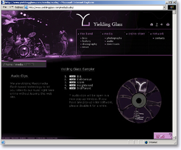

Yielding Glass is a rock band based in Concord, New Hampshire.
This promo web site features Macromedia Flash-based CD preview, photo gallery, the list of upcoming shows, discussion board and other promotional material.

January 24, 2003
Yielding Glass is a rock band based in Concord, New Hampshire.
This promo web site features Macromedia Flash-based CD preview, photo gallery, the list of upcoming shows, discussion board and other promotional material.
